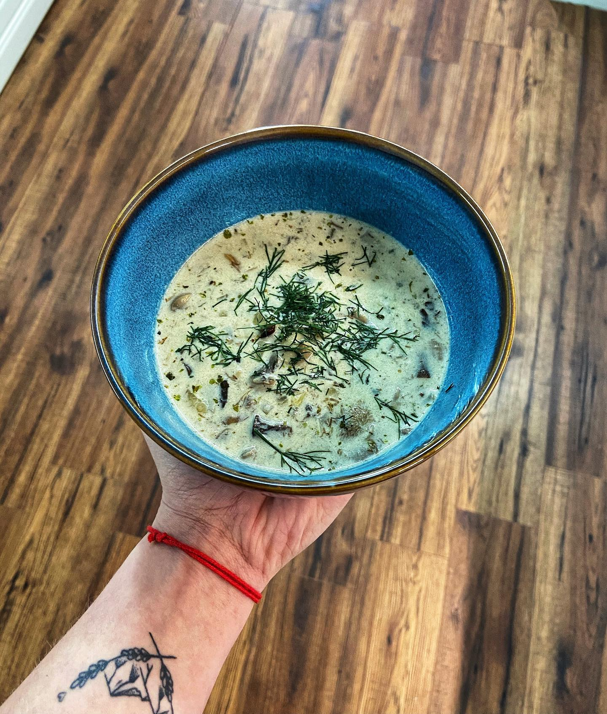

Hubová polievka podľa @denisa_smatanova — Normy Jedál
Hubová krémová polievka 🤤
Potrebujete :
Jednu cibulu
Suchohriby hnedé (kúpite v lidl zavárané)
Šampiňóny zavárané krajané (giana-lidl) 300ml mlieka nízkotučného
Nadrobno nasekanu cibuľku som si osmahneme na masielku pridame suchohriby 1dcl vody . Necháme vodu odpariť . Potom pridame šampiňóny premiešame priadne čierne korenie , mletý kmín , trosku majoranky ,1 bobkový list a soľ.
Zalejeme mliekom povaríme a môžeme degustovať
Na vrch som si dala kôpr ale môžete si dať aj petezlenovu vňať mnam 🤤
*
*
*
*
*
#dnesjem#hubovapolievka#mushroomsoup#lunch#lunchtime#obed#jedlo#zdravoachutne#